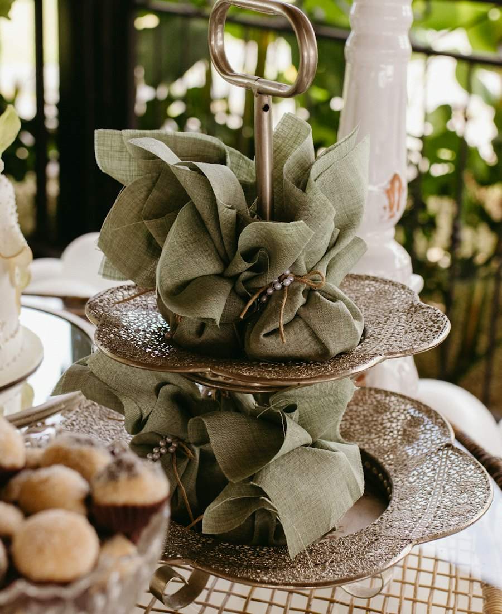
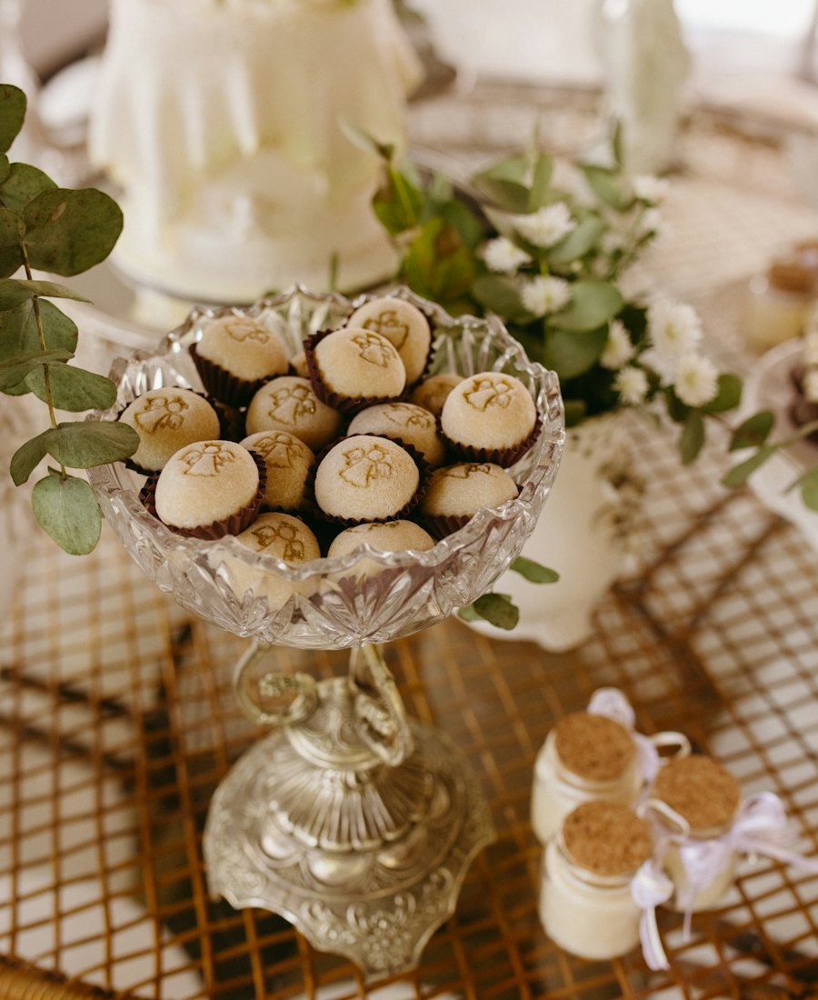
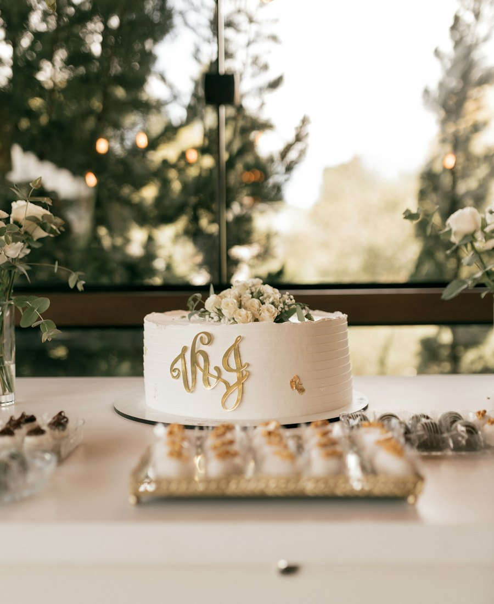
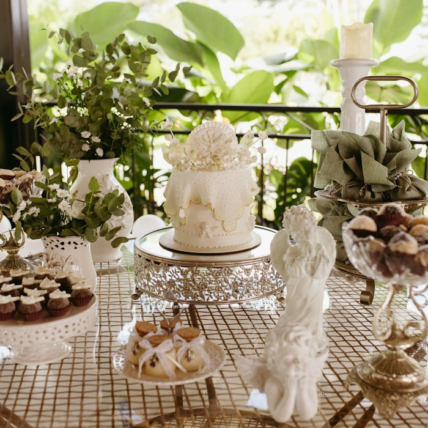
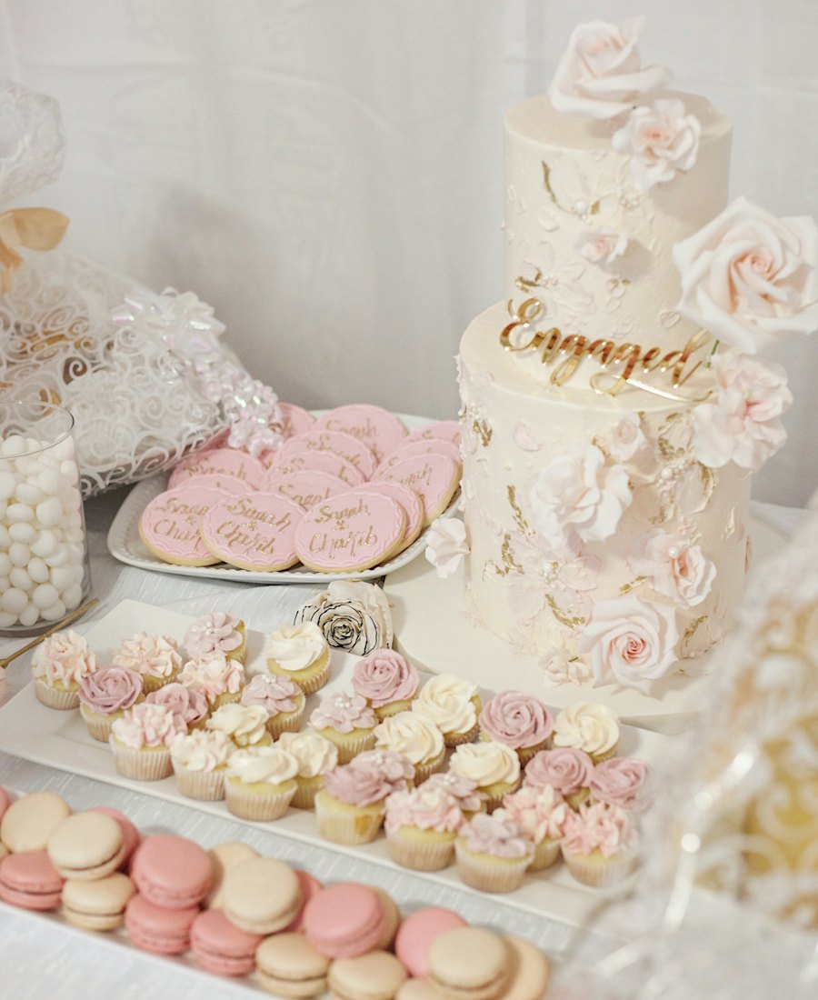
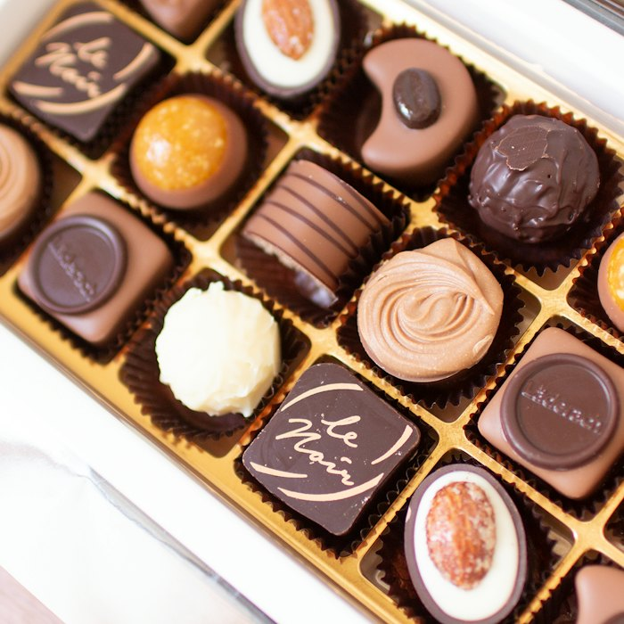
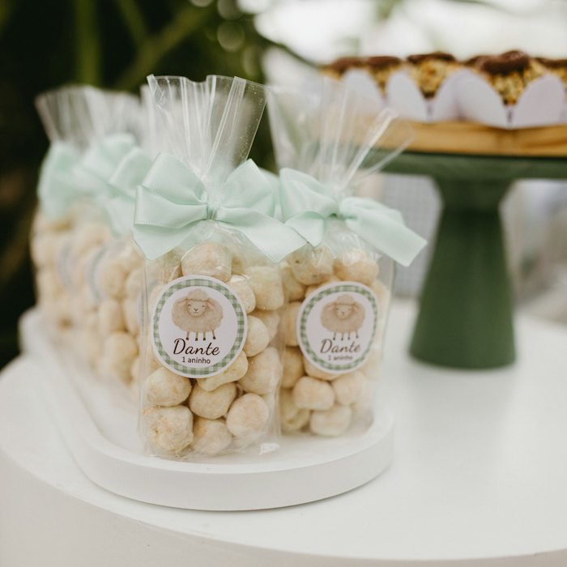

Monte a mesa de doces da sua festa
Toque nos doces que você imagina na mesa. Ao lado, a tag do seu orçamento vai se preenchendo com os nomes, a data e a sua escolha, e segue pronta para o WhatsApp da Tay.
Itens e fotos ilustrativos. No site final entram os doces, sabores e fotos da Tay.



Há mais de 10 anos adoçando histórias.
Da apresentação da Tay no Instagram
Bem-casados embalados um a um, doces finos nas forminhas da cor da festa e a mesa montada para virar foto. A Tay é especialista em doces para casamento e atende Santa Bárbara d'Oeste e as cidades da região.
Texto de exemplo. No site final entra a história da Tay contada por ela.
Como encomendar
Mande a data
Monte a tag acima ou chame no WhatsApp com a data e o número de convidados.
Escolha sabores e embalagem
A Tay apresenta as opções e monta o orçamento com as cores do casamento.
Receba na festa
Entrega ou retirada combinada direto com ela, com tudo pronto para a mesa.
Texto de exemplo. No site final entra o jeito de trabalhar da Tay.
Mesas que viram lembrança
Doces finos, bem-casados e lembrancinhas para o grande dia.




Fotos ilustrativas. No site final entram as fotos das mesas feitas pela Tay.
Onde a Tay atende
- Região
- Santa Bárbara d'Oeste e região
- (19) 99132-7216
- @taydocesfinos
- Retirada
- Endereço de exemplo. No site final entra o endereço de retirada, se houver.
Perguntas frequentes
Com quanto tempo de antecedência devo encomendar?
Quanto antes, melhor, principalmente para casamentos em datas concorridas. Mande a data no WhatsApp que a Tay confirma se ainda tem vaga.
Quantos bem-casados eu preciso?
O mais comum é um por convidado, com uma pequena folga. A Tay ajuda a fechar a quantidade certa no orçamento.
Dá para escolher a cor da fita e da embalagem?
Sim. Papel, fita e tag combinam com as cores e o estilo do seu casamento.
Vocês atendem fora de Santa Bárbara d'Oeste?
A Tay atende Santa Bárbara d'Oeste e região. Pergunte pelo WhatsApp se a sua cidade está incluída.
Respostas de exemplo. No site final entram as respostas da Tay.